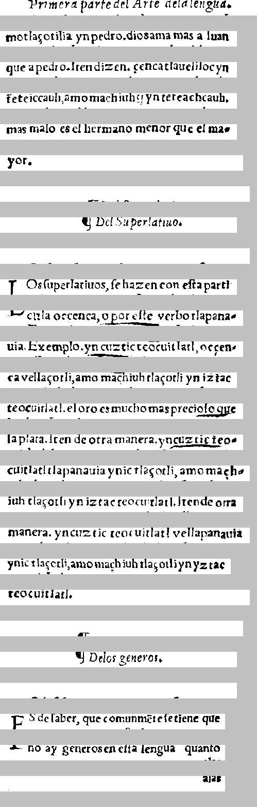

   Primero 134616961 -116  91-161691 R44  
primera parte del Arte de la lengua.

 \iinotla\ccotili\`a, yn pedro . di\`o649341944 \`a Iuan 
motla\ccotilia ynpedrio. dios ama mas a Iuan

 que apedro Jtendi1691-169641 I499tloc yn 
que a pedro. Iten dizen. cencatlauelilocyn

 teteiccauh,4momachiuh 16791616469649li- 
teteiccauh,amomachiuh ynteteachcauh.

 mas 194l\`o16\`otl39 m\`a9\`o19699H29614  \iin\`a- 
mas malo es el hermano menor que el ma-

 yot-            
yor.

                


     II. De los Per|arian-   
        ¶Del Superlatiuo.

                


  l? Os |uper|atinos, |e hazen con ella part\'i 
LOs |uperlatiuos, |e hazen con e|ta parti

 *? et tla oc cenca.o EoLLLE, verbo tlapana- 
cula occenca, o por e|te verbo tlapana-

 \iitl\`a Exemplo -722tztic teocuitlatl, oc cen- 
uia. Exemplo. yn cuzticteocuitlatl, occen-

 c\`a vella\ccotli, \`amo machiuhtla\cc\`otli yn iztac 
cavella\ccotli, amo machiuh tla\ccotil yn iztac

 t6969 itlatl, el oro es mucho m\'as preci2122lle 
teocuitlatl. el oro es mucho mas precio|o que

 l4P1414. Iten de otra manera, yn2122L219- 
la plata. I ten de otra manera. yncuztic teo-

 94 itlatl tlapanauia ynic tla\ccotli, amo m\`a1 In- 
cuitlatl tlapanauia ynic tla\ccotli, amo mach-

 i9h tla\cc\`otli yn iztacteocuitlatl, iten de otr\`a 
iuh tla\ccotli yn izteacteocuitlatl. I tende otra

 \iin4994. yn cuztic teocuitlatl vellapan\`aui\`a 
manera. yncuztic teocuitlatl vellapanauia

 7935 tla\ccotli, amo machiuhtla\cc\`otli yn yzt\`a6 
ynic tla\ccotli, amo machiuh tla\ccotliynyztac

 169944 tl\`atl-          
teocuitlatl.

     i,          


     II. De los generos,     
        ¶Delos generos.

                


  I27.-VFI499, que comunm\'etel696961696 
Es de |aber, que comunmete |e tiene que

 ?" "9 47 869669696914 I69894 894969 
no ay generos en e|ta lengua  quanto

            6166 
                    alas


===============================================


   [spanish Primero 134616961 -116  91-161691 R44  
 ][nahuatl \iinotla\ccotili\`a, yn pedro . di\`o649341944 \`a Iuan 
 ][spanish que apedro Jtendi1691-169641 ][nahuatl I499tloc yn 
 teteiccauh,4momachiuh ][spanish 16791616469649li- 
 mas ][nahuatl 194l\`o16\`otl39 m\`a9\`o19699H29614  \iin\`a- 
 yot-            
                
][null      [spanish II. De los Per|arian-   
                
  l? Os |uper|atinos, |e hazen con ella part\'i 
 ][latin *? et ][nahuatl tla oc cenca.o EoLLLE, ][latin verbo ][nahuatl tlapana- 
 \iitl\`a ][latin Exemplo ][nahuatl -722tztic teocuitlatl, oc cen- 
 c\`a vella\ccotli, \`amo machiuhtla\cc\`otli yn iztac 
 t6969 itlatl, ][spanish el oro es mucho m\'as ][latin preci2122lle 
][null  [nahuatl l4P1414. ][spanish Iten de otra manera, ][nahuatl yn2122L219- 
 94 itlatl tlapanauia ynic tla\ccotli, amo m\`a1 In- 
 i9h tla\cc\`otli yn iztacteocuitlatl, iten de otr\`a 
 \iin4994. yn cuztic teocuitlatl vellapan\`aui\`a 
 7935 tla\ccotli, amo machiuhtla\cc\`otli yn yzt\`a6 
 169944 tl\`atl-          
     i,          
][null      [spanish II. De los generos,     
                
  I27.-VFI499, que comunm\'etel696961696 
 ?" "9 47 869669696914 ][nahuatl I69894 894969 
            6166 


<table><tr><td>
<font face="courier"> 
</br></br></br></br></br>
</br></br>

   <font color="Red">Primero 134616961 -116  91-161691 R44  </br>
 </font><font color="Blue">\iinotla\ccotili\`a, yn pedro . di\`o649341944 \`a Iuan </br>
 </font><font color="Red">que apedro Jtendi1691-169641 </font><font color="Blue">I499tloc yn </br>
 teteiccauh,4momachiuh </font><font color="Red">16791616469649li- </br>
 mas </font><font color="Blue">194l\`o16\`otl39 m\`a9\`o19699H29614  \iin\`a- </br>
 yot-            </br>
                </br>
</font><font color="Black">     <font color="Red">II. De los Per|arian-   </br>
                </br>
  l? Os |uper|atinos, |e hazen con ella part\'i </br>
 </font><font color="Olive">*? et </font><font color="Blue">tla oc cenca.o EoLLLE, </font><font color="Olive">verbo </font><font color="Blue">tlapana- </br>
 \iitl\`a </font><font color="Olive">Exemplo </font><font color="Blue">-722tztic teocuitlatl, oc cen- </br>
 c\`a vella\ccotli, \`amo machiuhtla\cc\`otli yn iztac </br>
 t6969 itlatl, </font><font color="Red">el oro es mucho m\'as </font><font color="Olive">preci2122lle </br>
</font><font color="Black"> <font color="Blue">l4P1414. </font><font color="Red">Iten de otra manera, </font><font color="Blue">yn2122L219- </br>
 94 itlatl tlapanauia ynic tla\ccotli, amo m\`a1 In- </br>
 i9h tla\cc\`otli yn iztacteocuitlatl, iten de otr\`a </br>
 \iin4994. yn cuztic teocuitlatl vellapan\`aui\`a </br>
 7935 tla\ccotli, amo machiuhtla\cc\`otli yn yzt\`a6 </br>
 169944 tl\`atl-          </br>
     i,          </br>
</font><font color="Black">     <font color="Red">II. De los generos,     </br>
                </br>
  I27.-VFI499, que comunm\'etel696961696 </br>
 ?" "9 47 869669696914 </font><font color="Blue">I69894 894969 </br>
            6166 </br>
</font></font><br/><br/><br/>
<font color="Black">null</font></br>
<font color="Red">spanish</font></br>
<font color="Olive">latin</font></br>
<font color="Blue">nahuatl</font></br>
</td><td>
</td></tr></table>


CER: 0.445859872611465
CER, allow f->s: 0.445859872611465
WER, keep punc: 0.8290598290598291
WER, keep punc, allow f->s: 0.8290598290598291
WER, remove punc: 0.8034188034188035
WER, remove punc, allow f->s: 0.8034188034188035
